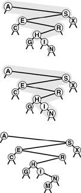
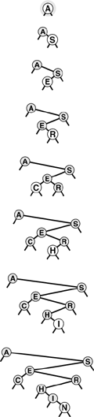
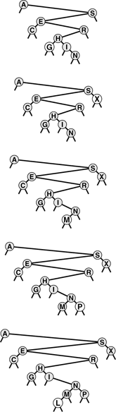
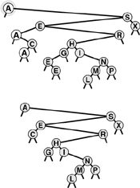

C++ Programming Robert Sedgewick - Princeton University Addison Wesley Professional Algorithms in C++, Parts 1–4: Fundamentals, Data Structure, Sorting, Searching, Third Edition C++ Programming Robert Sedgewick - Princeton University Addison Wesley Professional Algorithms in C++, Parts 1–4: Fundamentals, Data Structure, Sorting, Searching, Third Edition
12.5. Binary Search Trees (BSTs)
To overcome the problem that insertions are expensive, we shall use an explicit tree structure as the basis for a symbol-table implementation.
The underlying data structure allows us to develop algorithms with fast average-case performance for the search, insert, select, and sort symbol-table operations. It is the method of choice for many applications, and qualifies as one of the most fundamental algorithms in computer science.
We discussed trees at some length, in Chapter 5, but it will be useful to review the terminology. The defining property of a tree is that every node is pointed to by only one other node, called the parent. The defining property of a binary tree is that each node has left and right links. Links may point to other binary trees or to external nodes, which have no links. Nodes with two links are also referred to as internal nodes. For search, each internal node also has an item with a key value, and we refer to links to external nodes as null links. The key values in internal nodes are compared with the search key, and control the progress of the search.
Definition 12.2. A binary search tree (BST) is a binary tree that has a key associated with each of its internal nodes, with the additional property that the key in any node is larger than (or equal to) the keys in all nodes in that node's left subtree and smaller than (or equal to) the keys in all nodes in that node's right subtree|
Program 12.8 uses BSTs to implement the symbol-table search, insert, construct, and count operations. The first part of the implementation defines nodes in BSTs as each containing an item (with a key), a left link, and a right link. The code also maintains a field that holds the number of nodes in the tree, to support an eager implementation of count. The left link points to a BST for items with smaller (or equal) keys, and the right link points to a BST for items with larger (or equal) keys.
Given this structure, a recursive algorithm to search for a key in a BST follows immediately: If the tree is empty, we have a search miss; if the search key is equal to the key at the root, we have a search hit. Otherwise, we search (recursively) in the appropriate subtree. The searchR function in Program 12.8 implements this algorithm directly. We invoke a recursive routine that takes a tree as first argument and a key as second argument, starting with the root of the tree and the search key. At each step, we are guaranteed that no parts of the tree other than the current subtree can contain items with the search key.
Program 12.8. BST-based symbol table|
The search and insert functions in this implementation use the private recursive functions searchR and insertR that directly mirror the recursive definition of BSTs. Note the use of a reference argument in insertR (see text). The link head points to the root of the tree.
template <class Item, class Key>
class ST
{
private:
struct node
{ Item item; node *l, *r;
node(Item x)
{ item = x; l = 0; r = 0; }
};
typedef node *link;
link head;
Item nullItem;
Item searchR(link h, Key v)
{ if (h == 0) return nullItem;
Key t = h->item.key();
if (v == t) return h->item;
if (v < t) return searchR(h->l, v);
else return searchR(h->r, v);
}
void insertR(link& h, Item x)
{ if (h == 0) { h = new node(x); return; }
if (x.key() < h->item.key())
insertR(h->l, x);
else insertR(h->r, x);
}
public:
ST(int maxN)
{ head = 0; }
Item search(Key v)
{ return searchR(head, v); }
void insert(Item x)
{ insertR(head, x); }
};
|
Just as the size of the interval in binary search shrinks by a little more than half on each iteration, the current subtree in binary-tree search is smaller than the previous (by about half, ideally). The procedure stops either when an item with the search key is found (search hit) or when the current subtree becomes empty (search miss).
The diagram at the top in Figure 12.4 illustrates the search process for a sample tree. Starting at the top, the search procedure at each node involves a recursive invocation for one of that node's children, so the search defines a path through the tree. For a search hit, the path terminates at the node containing the key. For a search miss, the path terminates at an external node, as illustrated in the middle diagram in Figure 12.4.
In a successful search for H in this sample tree (top), we move right at the root (since H is larger than A), then left at the right subtree of the root (since H is smaller than S), and so forth, continuing down the tree until we encounter the H. In an unsuccessful search for M in this sample tree (center), we move right at the root (since M is larger than A), then left at the right subtree of the root (since M is smaller than S), and so forth, continuing down the tree until we encounter an external link at the left of N at the bottom. To insert M after the search miss, we simply replace the link that terminated the search with a link to M (bottom).

|
Program 12.8 uses 0 links to represent external nodes, and a private data member head that is a link to the root of the tree. To construct an empty BST, we set head to 0. We could also use a dummy node at the root and another to represent all external nodes, in various combinations analogous to those we considered for linked lists in Table 3.1 (see Exercise 12.53).
The search function in Program 12.8 is as simple as binary search; an essential feature of BSTs is that insert is as easy to implement as search. A recursive function insertR to insert a new item into a BST follows from logic similar to that we used to develop searchR, and uses a reference argument h to build the tree: If the tree is empty, we set h to link to a new node containing the item; if the search key is less than the key at the root, we insert the item into the left subtree; otherwise, we insert the item into the right subtree. That is, the reference argument is changed only at the last recursive call, when the new item is inserted. In Section 12.8 and in Chapter 13, we shall study more advanced tree structures that are naturally expressed with this same recursive scheme, but that change the reference argument more often.
Figures 12.5 and 12.6 show how we construct a sample BST by inserting a sequence of keys into an initially empty tree. New nodes are attached to null links at the bottom of the tree; the tree structure is not otherwise changed. Because each node has two links, the tree tends to grow out, rather than down.
This sequence depicts the result of inserting the keys A S E R C H I N into an initially empty BST. Each insertion follows a search miss at the bottom of the tree.

This sequence depicts insertion of the keys G X M P L to the BST started in Figure 12.5.

The sort function for symbol tables is available with little extra work when BSTs are used. Constructing a binary search tree amounts to sorting the items, since a binary search tree represents a sorted file when we look at it the right way. In our figures, the keys appear in order if read from left to right on the page (ignoring their height and the links). A program has only the links with which to work, but a simple inorder traversal does the job, by definition, as shown by the recursive implementation showR in Program 12.9. To show the items in a BST in order of their keys, we show the items in the left subtree in order of their keys (recursively), then show the root, then show the items in the right subtree in order of their keys (recursively).
Program 12.9. Sorting with a BST|
An inorder traversal of a BST visits the items in order of their keys. In this implementation, we use the item member function show to print the items in order of their keys.
private:
void showR(link h, ostream& os)
{
if (h == 0) return;
showR(h->l, os);
h->item.show(os);
showR(h->r, os);
}
public:
void show(ostream& os)
{ showR(head, os); }
|
As discussed in Section 12.1, we shall refer on occasion to a generic visit operation for symbol tables, where we want to visit each of the items in the symbol table in a systematic manner. For BSTs, we can visit items in order of their keys by replacing "show" by "visit" in the description just given and perhaps arranging to pass the function to visit an item as a parameter (see Section 5.6).
Thinking nonrecursively when contemplating search and insert in BSTs is also instructive. In a nonrecursive implementation, the search process consists of a loop where we compare the search key against the key at the root, then move left if the search key is less and right if it is greater. Insertion consists of a search miss (ending in an empty link), then replacement of the empty link with a pointer to a new node. This process corresponds to manipulating the links explicitly along a path down the tree (see Figure 12.4). In particular, to be able to insert a new node at the bottom, we need to maintain a link to the parent of the current node, as in the implementation in Program 12.10. As usual, the recursive and nonrecursive versions are essentially equivalent, but understanding both points of view enhances our understanding of the algorithm and data structure.
Program 12.10. Insertion in BSTs (nonrecursive)|
Inserting an item into a BST is equivalent to doing an unsuccessful search for it, then attaching a new node for the item in place of the null link where the search terminates. Attaching the new node requires that we keep track of the parent p of the current node q as we proceed down the tree. When we reach the bottom of the tree, p points to the node whose link we must change to point to the new node inserted.
void insert(Item x)
{ Key v = x.key();
if (head == 0)
{ head = new node(x); return; }
link p = head;
for (link q = p; q != 0; p = q ? q : p)
q = (v < q->item.key()) ? q->l : q->r;
if (v < p->item.key()) p->l = new node(x);
else p->r = new node(x);
}
|
The BST functions in Program 12.8 do not explicitly check for items with duplicate keys. When a new node whose key is equal to some key already in the tree is inserted, it falls to the right of the node already in the tree. One side effect of this convention is that nodes with duplicate keys do not appear contiguously in the tree (see Figure 12.7). However, we can find them by continuing the search from the point where search finds the first match, until we encounter a 0 link. There are several other options for dealing with items that have duplicate keys, as mentioned in Section 9.1.
When a BST has records with duplicate keys (top), they appear scattered throughout the tree, as illustrated by the three highlighted A's. Duplicate keys do all appear on the search path for the key from the root to an external node, so they can readily be accessed. However, to avoid confusing usages such as "the A below the C," we use distinct keys in our examples (bottom).

BSTs are dual to quicksort. The node at the root of the tree corresponds to the partitioning element in quicksort (no keys to the left are larger, and no keys to the right are smaller). In Section 12.6, we shall see how this observation relates to the analysis of properties of the trees.
|